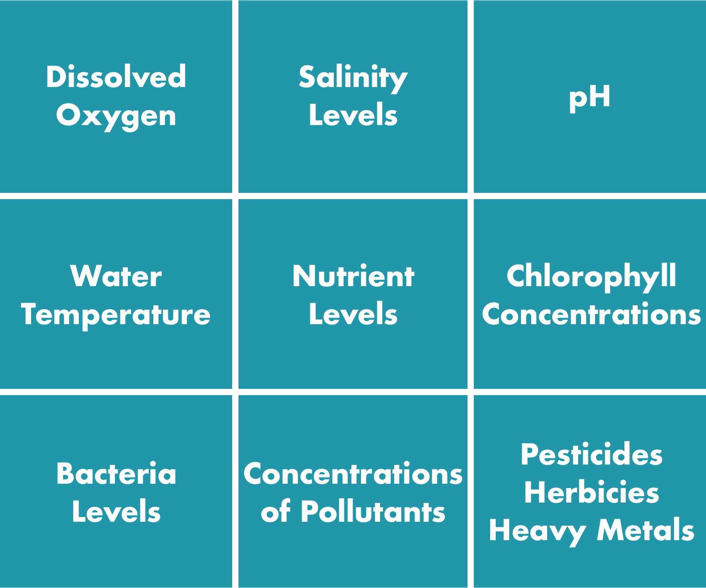
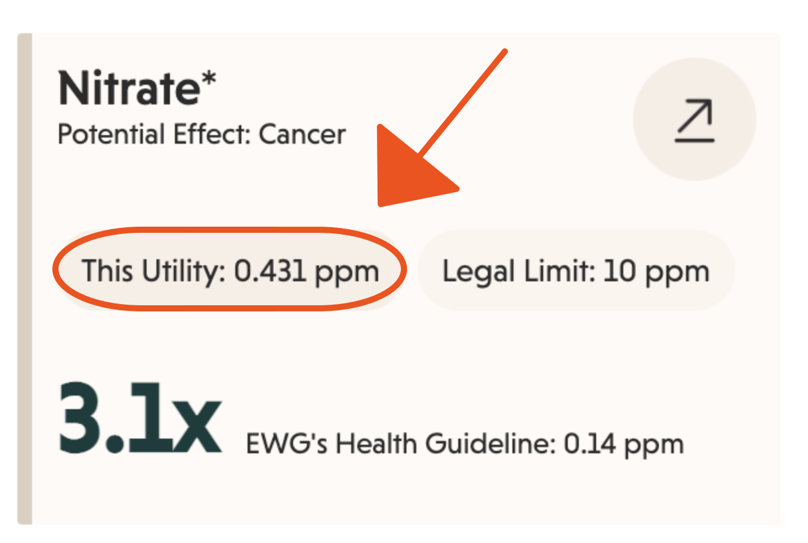
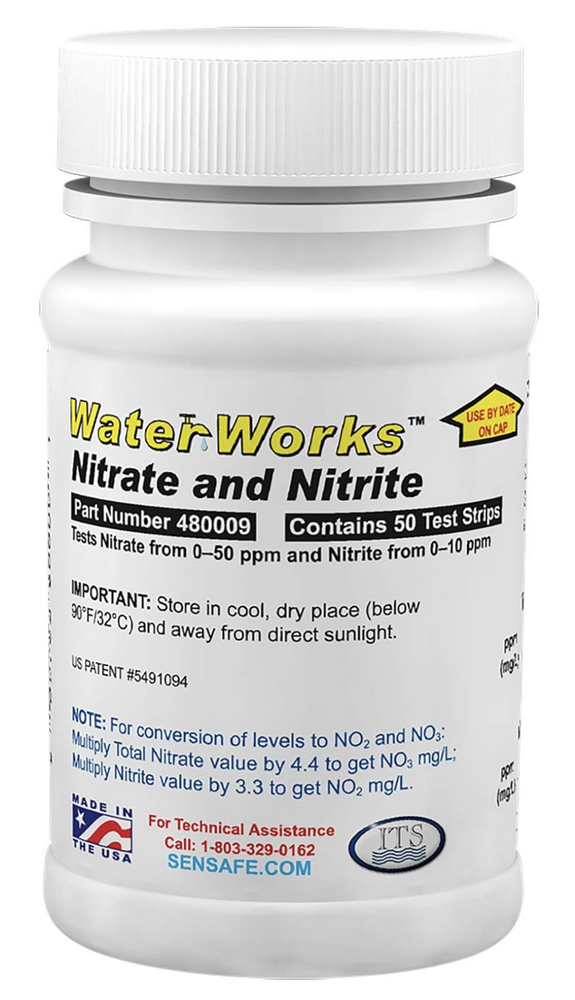
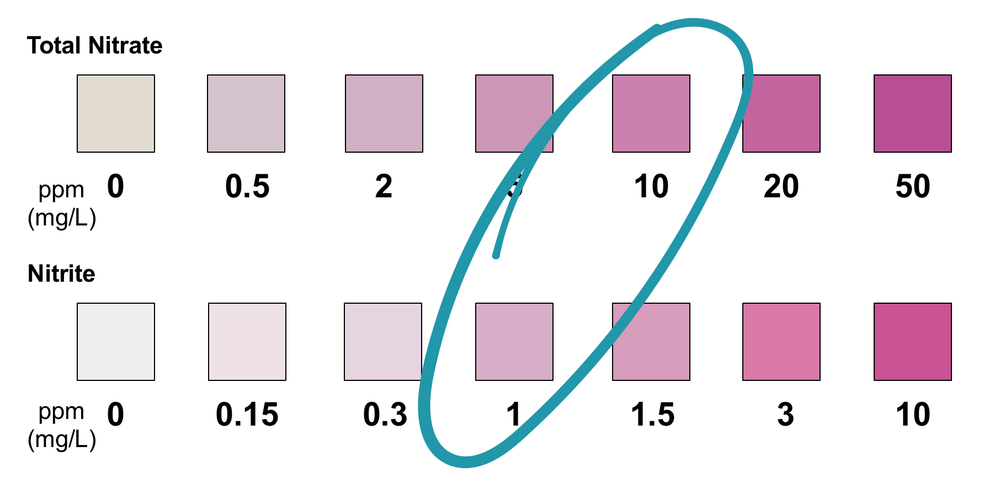

Introduction to Water Quality
Checkpoints on this Page:
What is Water Quality?
When scientists study water, they measure different things to see if it’s safe. You may know from science that a water molecule is H2O.
What does H2O mean?
H2O is pure water, but water is almost always mixed with other things, like minerals, salts, and other chemicals. Some of these things help water be safe to drink, while others make it unsafe. It’s also important to remember that water is used for different purposes, so for example, the same water can be safe for livestock and crop irrigation, but unsafe for human consumption.
Water quality also changes over time. Weather, changes in land use, changes in industrial activities and agriculture, for example, can all affect water. We can measure certain chemicals and water characteristics to monitor how water is changing over time.
Today’s Focus: Nitrogen
The video above discusses a number of indicators of water quality. The graphic shown in the video has been recreated below.

Nitrogen as Nutrient
Today, we’ll focus on one important measurement—the concentration of nitrogen in water. When nitrogen, air, and water combine, they form ions—specifically nitrates and nitrites. Both nitrates (NO3) and nitrites (NO2) are a common and natural component of water. In this way, the presence of nitrogen (via nitrates and nitrites in the water) is considered a nutrient.
The presence of nitrogen in water is part of the nitrogen cycle, which is the process by which nitrogen is converted to other nutrients necessary for life.
Nitrogen as Pollutant
While Nitrogen is a needed nutrient, in larger quantities it can become a pollutant. This excess nitrogen—observed as nitrates— results primarily from agricultural operations (fertilizer runoff and livestock manure), sewage and septic systems (human waste), and acid rain.
🎯 Checkpoint 1: Nitrogen In Our Water
Summarize. What is the role of nitrogen in our water? Do we want nitrates in our streams? Our drinking water? How about water with lots of nitrogen?
Monitoring Nitrogen in the Water
Too much nitrogen in water can make both people and animals sick 🐟🐟🐟. The United States Environmental Protection Agency (EPA) sets limits on what are allowable concentrations of nitrates and nitrites in drinking water. These limits are legally enforceable.
Nitrates: 10 mg/L
Nitrites: 1 mg/L
The World Health Organization (WHO) also sets limits on allowable levels of nitrates and nitrites in drinking water. Their limits are similar to those from the EPA.
Monitoring Nitrogen: Your Local Utility
Local water utilities must survey and monitor the concentration of nitrogen in water to ensure that their water supply meets the EPA limits. They regularly conduct testing and report results to the appropriate regulatory agencies. You can look up the reported nitrate concentration for water from your utility by using your zipcode.
🎯 Checkpoint 2: Nitrogen In Your Water
Using data from EWG, what is the most recently reported nitrate concentration by your water utility?

Monitoring Nitrogen: You and Other Citizen Scientists!
There are a variety of ways we, as private citizens, can monitor the concentration of nitrogen in our water, too. One way is to use test strips.


🎯 Checkpoint 3: Nitrogen Summary
What forms of nitrogen should we be concerned about in our water? What are the EPA drinking water limits for each?
What’s Next?
🧪 Now let’s practice testing nitrate and nitrite content in water samples. We’ll complete a brief water quality lab on the next page.